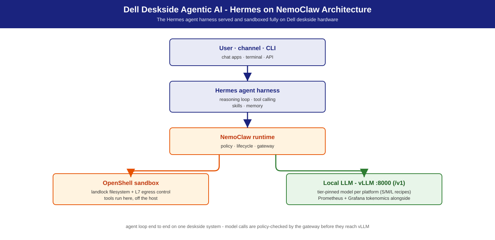

Hermes on NemoClaw
Tool-using AI agents as a product, running fully on-premise on Dell workstations — policy-bounded agent sessions, sandboxed tools, and private inference on a single deskside system.
Summary
Hermes Agent, built by Nous Research, is the tool-using agent harness this solution deploys: a policy-bounded autonomous agent that reasons with a locally-served LLM (vLLM, OpenAI-compatible), calls external tools through the Model Context Protocol (MCP), and keeps skills and memory across sessions. It runs on the NemoClaw runtime — NemoClaw supplies policy, lifecycle, and the gateway; the OpenShell sandbox supplies filesystem landlock and L7 egress boundaries. Everything runs on one Dell deskside system; no cloud dependency for the model path.
This solution is the deployment path for Hermes on Dell S / M /
L tiers: validated sizing, one-command serving recipes, and an IT-Admin fleet
guide. The same local endpoint (http://localhost:8000/v1) also serves the
Agentic Coding solution on the same box. For the base
runtime with its default OpenClaw agent, see OpenClaw on NemoClaw.
What this is not: an IDE autocomplete solution (that is Agentic Coding), nor an unrestricted internet agent — policy and egress boundaries are the point.
Personas
| Persona | What this solution gives them |
|---|---|
| IT Admin | Two-plane install (serving + agent), policy tiers, identity and monitoring hooks — IT-Admin Guide. |
| Functional SME | "How many analysts can share this box?" — the S/M/L table below with measured concurrent-agent envelopes. |
| AI Engineer | Tool-calling model lineup, vLLM flags, MCP tool wiring, smoke tests — Developer Deploy Guide. |
Terms: Glossary.
Reference NVIDIA playbooks
| Playbook | Platform | What Dell adds |
|---|---|---|
| Run Hermes Agent with a Local LLM | DGX Spark (GB10) | Dell S/M/L sizing, vLLM recipes, validated agent concurrency envelopes, fleet guide |
| RTX Local AI hub | RTX PRO discrete GPUs (Dell Pro Precision 9 T2 / T4 / T6 towers) | Tower-tier serving recipes + validation |
Use cases
Use cases this solution enables (NVIDIA NemoClaw / Hermes positioning, mapped onto Dell tiers with local vLLM):
| Use case | What it looks like |
|---|---|
| Controlled agent rollout | Try agent behavior behind explicit filesystem and network boundaries before widening access. |
| Managed tool / MCP access | Connect authenticated tools (docs, tickets, repos) without leaving raw credentials in the sandbox. |
| Headless / remote Linux deploy | Always-on agent on a deskside or lab host. |
| Sales / product research | Mix internal mail, chat, and docs with approved external research under egress lock. |
| Engineering triage | GitHub, CI, and log investigation with a sandboxed shell and repo tools. |
| Support desk / knowledge discovery | Draft answers from internal knowledge plus approved connectors; PII stays on site. |
| Multi-agent / team workflows | Specialized agents collaborating under one governed runtime. |
Deskside pitch: you feel the agent on your own GPU, not a shared cloud tenant.
Architecture

The agent loop, end to end:
User / channel / CLI
│
▼
Hermes agent ── harness: reasoning loop,
│ tool-calling, skills, memory
▼
NemoClaw runtime ── policy, lifecycle, gateway
│
┌───────────┴────────────────┐
▼ ▼
OpenShell sandbox Local LLM — vLLM :8000 (/v1)
(landlock + L7 egress) │
│ ▼
▼ Nemotron 3.5 Lightning (NVFP4)
MCP tool servers
(files, git, tickets, APIs)
Dell deskside workstation (S / M / L tier)
_Commands in this guide run from the repository root (`git clone` this repo and `cd` into it)._
Two-plane deployment
| Plane | Contents | Install path |
|---|---|---|
| 1 — Inference + observability | vLLM (Nemotron) + Prometheus + Grafana | Recipe under recipes/ + Docker Compose |
| 2 — Agent | NemoClaw installer → OpenShell + Hermes sandbox | NVIDIA installer, then nemohermes (inline steps in the guides) |
Plane 1 is reusable across solutions — the same http://localhost:8000/v1
endpoint serves Hermes, coding assistants, and Agentic Video Search & Summarization
on one box.
Key components
| Component | Role |
|---|---|
| Hermes | Tool-using agent harness — tool-calling loop, policy execution, self-improving skills / memory (runs on NemoClaw) |
| NemoClaw | Agent runtime and lifecycle manager — the base plane (OpenClaw on NemoClaw) |
| OpenShell | Secure sandbox — long-running agent session isolation |
| vLLM | Local inference server — OpenAI-compatible API (docs.vllm.ai) |
| MCP server(s) | Tool orchestration via Model Context Protocol |
| Nemotron 3.5 Lightning NVFP4 | Default agent LLM — tool-calling capable, MoE, 30 B total / ~3 B active |
S / M / L sizing
Agent workloads have variable, stateful resource consumption — these are conservative baselines from measured tool-using agent ladders. One Hermes task ≈ several sequential LLM calls plus tool executions, so serving concurrency ≠ agent concurrency; size from the agent column, not raw tokens/sec. Sizing framework: S/M/L Sizing.
| Tier | Dell system | GPU / memory | Model (default · alt) | Concurrent Hermes agents |
|---|---|---|---|---|
| S | Dell Pro Precision with GB10 | GB10 Grace-Blackwell · 128 GB unified · aarch64 | Nemotron-3.5-Lightning-30B-A3B · alt Qwen3.8 27B | 1 – 2 interactive (4 pass, p50 ≤ ~23 s) |
| M | Dell Pro Precision 9 T4 with RTX PRO 6000 · multi-instance or TP | 1–2× RTX PRO 6000 (96 / 192 GB) | Nemotron 3.5 Super VL · alt Qwen3.8-Flash-Next | 1 – 4 (1× card: fastest measured wall-time) |
| L | Dell Pro Precision with GB300 | GB300 252 GB HBM3e · aarch64 | Nemotron 3.5 Super VL · alt GLM-5.3-Flash | 1 – 4+ (flat p50) |
| L | Dell Pro Precision 9 T6 | up to 5× RTX PRO 6000 (480 GB) | Nemotron 3.5 Super VL · alt GLM-5.3-Flash | 1 – 4 per GPU |
Model recommendation
- Default: Nemotron family, scaled per tier.
nvidia/NVIDIA-Nemotron-3.5-Lightning-30B-A3B-NVFP4— tool-calling capable MoE (30 B total / ~3 B active), NVFP4; runs on every tier, so a mixed fleet shares one default. M / L target pick is Nemotron 3.5 Super VL (recipes/{precision,gb300}/vllm/); Lightning is the S-tier default. - Tier alternatives (same OpenAI-compatible API, tool-calling verified):
- S —
nvidia/Qwen3.8-27B-NVFP4(+ MTP) ·recipes/gb10/vllm/docker-qwen3.8-27b-nvfp4.sh - M —
nvidia/Qwen3.8-Flash-Next-NVFP4(MTP ×3, engram CPU offload) ·recipes/precision/vllm/docker-qwen3.8-flash-next-nvfp4.sh - L —
RedHatAI/GLM-5.3-Flash-NVFP4(320 B/18 B-active MoE, 262 K ctx) ·recipes/gb300/vllm/docker-glm-5.3-flash-nvfp4.sh
Agentic tool-calling quality drives model choice — validated
function-calling is a hard requirement for Hermes. The shipping recipes
bake the default model's flags (--tool-call-parser qwen3_coder +
--reasoning-parser nemotron_v3); parser semantics:
vLLM tool-calling docs.
Validate any alternate model with the smoke test in
Developer Deploy Guide before adopting.
Inference stack
vLLM (preferred). OpenAI-compatible, production-grade. Hermes connects to
http://localhost:8000/v1 — the shared endpoint across this repository's
solutions; models are shared across workloads on one box. Alternative stacks
(ollama, llama.cpp, NIM): Inference Stack & Models.
Deployment recipes
Two-step quick start (for a fleet, scripts/landscape/deploy-solution.sh runs both steps):
# 1. Serve the local LLM (shipping default = Nemotron 3.5 Lightning)
recipes/gb10/vllm/docker-nemotron-3.5-lightning-nvfp4.sh --port 8000 # Dell Pro Precision with GB10
# recipes/precision/vllm/docker-nemotron-3.5-lightning-nvfp4.sh --port 8000 # Dell Pro Precision 9 T4 (RTX PRO 6000)
# recipes/gb300/vllm/docker-nemotron-3.5-lightning-nvfp4.sh --port 8000 # Dell Pro Precision with GB300
curl -s http://localhost:8000/v1/models
# 2. NemoClaw installer + Hermes onboarding
curl -fsSL https://www.nvidia.com/nemoclaw.sh | bash
nemoclaw onboard # choose Hermes / nemohermes when prompted
nemohermes agents list # expect: openclaw | hermes | ...
Full per-plane steps: Developer Deploy Guide (developers) · IT-Admin Guide (fleet). Recipe catalog: Deployment Recipes.
Benchmarks & performance (validation)
Agent capacity is stated in concurrent agents and per-turn wall-time, not raw tokens/sec. Same tool-using workload, same MCP tool set, same shipping-default model (Nemotron 3.5 Lightning NVFP4) on every line — only the Dell system changes. All tiers pass at concurrency 1 / 2 / 4 with 100 % task success.
| Measured platform | c=1 p50 | c=2 p50 | c=4 p50 | Plan for |
|---|---|---|---|---|
| Dell Pro Precision with GB10 | ~11 s | ~15 s | ~23 s | 1 – 2 interactive |
| Dell Pro Precision 9 T2 · 1× RTX PRO 6000 | ~3 s | ~3 s | ~4 s | 1 – 4 interactive (fastest measured wall-time) |
| Dell Pro Precision 9 T4 · 2× RTX PRO 6000 | ~9 s | ~11 s | ~12 s | 1 – 4; clean scaling with tool-heavy work |
| Dell Pro Precision 9 T6 · 5× RTX PRO 6000 (1 GPU active) | ~10 s | ~10 s | ~12 s | 1 – 4 per GPU; one vLLM instance per GPU behind a small router |
| Dell Pro Precision with GB300 | ~8 s | ~8 s | ~8 s | 1 – 4+; flat wall-time, headroom above tested range |
Serving-layer context (not the agent envelope): the default model on a single RTX PRO 6000 sustains 32 – 64 concurrent serving requests at p99 TTFT ≤ 264 ms — for sizing a multi-agent gateway fanning into one Plane 1 endpoint, not for "how many analysts share this box?" (use the agent table).
Management environment
- Identity: Hermes inherits the host's identity by default; on multi-user M / L deployments, front vLLM with an AD/LDAP-backed reverse proxy.
- Monitoring: vLLM
/metricsscraped by Prometheus, Grafana (:3000); NemoClaw exposes agent telemetry (task success, agent turns, tool-call counts). - Agent policies: standard / strict / permissive tiers ship with NemoClaw — ship standard in production; apply at sandbox creation (IT-Admin guide).
- Fleet: containerized deploy (Docker / Podman); scale by adding agent instances behind a shared gateway on M / L tiers.
Dependencies & Risk factors
- Dependencies: NemoClaw installer + Hermes agent from NVIDIA; vLLM on GB10 / RTX PRO / GB300; NVFP4 model availability; validated tool-calling in the served model (hard requirement).
- Risk factors: agent resource use is variable and stateful — envelopes are conservative; NVFP4 serving needs the recipe-pinned backend/parser flags; model recommendations evolve with the Nemotron family.
Related
- Developer Deploy Guide — developer quick-start · IT-Admin Guide — IT-admin fleet guide.
- OpenClaw on NemoClaw — the same runtime with the default OpenClaw agent, no Hermes.
- Agentic Coding — coding-assistant companion sharing the same vLLM serving layer.
- Personas — persona definitions.
- NVIDIA entry point: NemoClaw playbook.